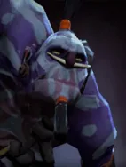

Paralyzing Cask
Targeted Active ability: Activates on Full Mana
Launches a cask of paralyzing powder that ricochets between enemy chess pieces, stunning and damaging those it hits.
| ★ | ★★ | ★★★ | |
|---|---|---|---|
| Hero duration | 1.0 | ||
| Creep duration | 1.0 | ||
| Base damage | 30 | 40 | 50 |
| Bounce range | 300 | ||
| Bounces | 4 | 5 | 7 |
| Speed | 1000 | ||
| Bounce delay | 0.3 | ||
| Creep damage pct | 100 | ||
| Cooldown (s) | 10 | 8 | 6 |
| Mana cost | 100 | ||
The Witch Doctor recycles the bones of fallen friends and foes, using the powder as part of his arsenal of charms and alchemy.
Stats
| ★ | ★★ | ★★★ | |
|---|---|---|---|
| Health | 550 | 1100 | 2200 |
| Mana | 100 | 100 | 100 |
| Armor | 0 | 0 | 0 |
| Magic resistance | 10% | 10% | 10% |
| Attack damage | 40–50 | 80–100 | 160–200 |
| Attack interval (s) | 1.5 | 1.5 | 1.5 |
| Attack range | 400 | 400 | 400 |
| Move speed | 500 | 500 | 500 |
 Troll · Voodoo Frenzy
Troll · Voodoo Frenzy
- (2) All allies gain +20 attack speed.
- (4) All allies gain another +50 attack speed (+70 total).
- (6) All allies gain +20 attack speed for each attack they land, for the rest of the battle, up to +120.
 Warlock · Soul Leech
Warlock · Soul Leech
At battle start, a Warlock at full HP gives up 25% of its current HP to gain +50 mana (max 100).
- (2) All allies heal for 5% of all damage they deal.
- (4) All allies get +20% more lifesteal (25% in total).
- (6) Warlocks steal max HP equal to 50% of all damage they deal: the target loses that much max HP and the Warlock gains it.